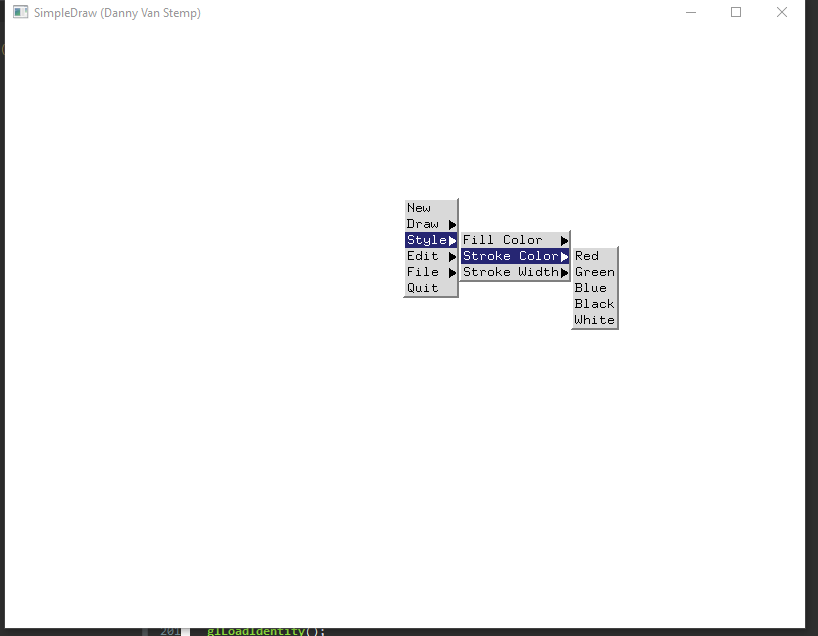
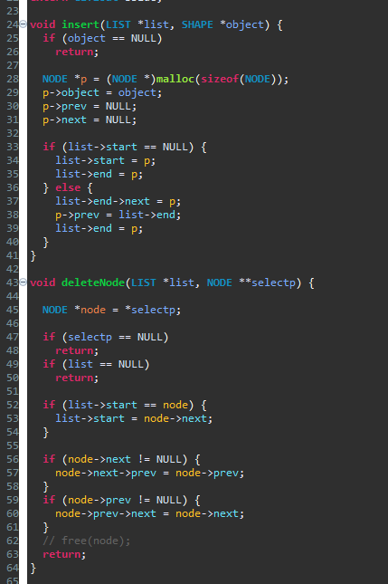
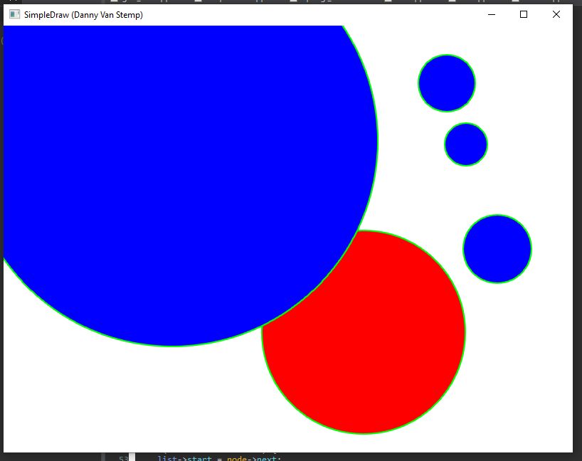
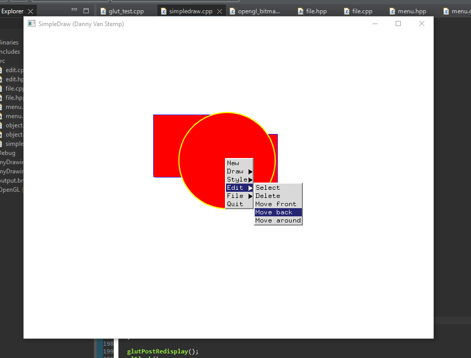
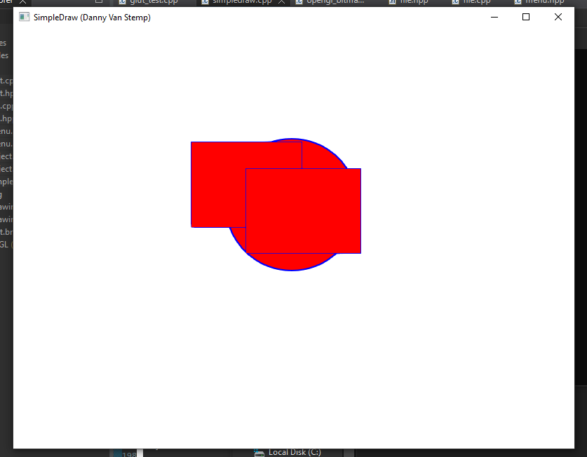
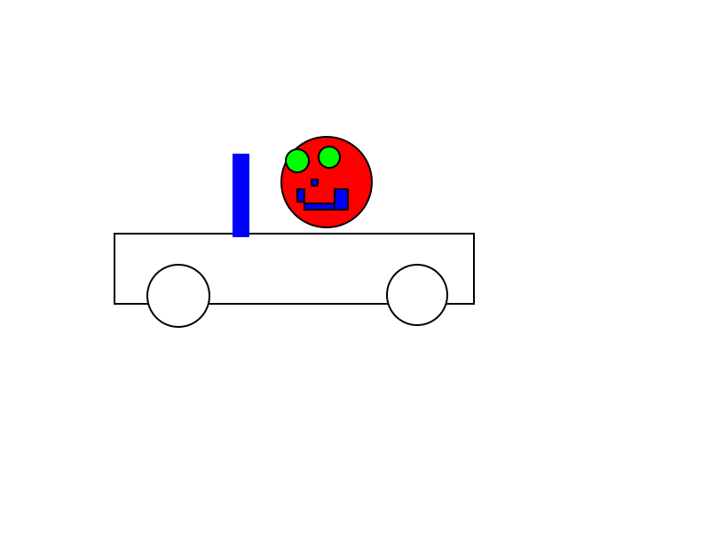
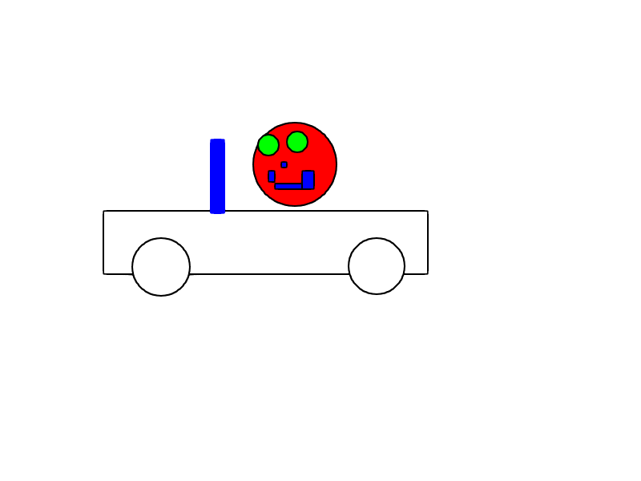

image caption
image captionAuthor: Daniel Van Stemp
Date: Oct 6 2022
Check readme.txt for course work statement and self-evaluation.
A graphic primitive is the lowest level 2D element in graphics. A graphics object is a collection of primitives. Elements such as circles, rectangles, or lines. The graphics pipeline rasterizes primitives into pixels for the display (unless it’s a vector display)
The coordinate systems are MCS -> WCS -> VCS -> NCS -> DCS
Scan conversion is the process of rasterizing a vector image. There is an algorithm that defines where to place pixels on the edges of the polygon or filling in a polygon
Complete? (Yes)
Complete? (Yes)
Complete? (Yes)
If No, Add a short description to describe the issues encountered.
Complete? (Yes/No)
If Yes, insert a screen shot image to show the completion.
image captions
If No, add a short description to describe the issues encountered.
Complete? (Yes)
Complete just didn't use free() for deletes so application will leak memoryimage caption
Complete? (Yes)
image caption
Complete? (Yes)
image caption
Complete? (Yes)
image caption image caption
Complete? (Yes).
If Yes, output.svg.
Complete? (Yes/No).
If Yes, .
Complete? (Yes).
If Yes, C&S artwork in SVG, .
References